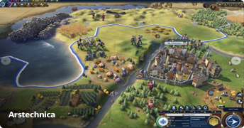

Civilization VI: Rise and Fall review: A few turns closer to a Golden Age
Every Civilization game since Civilization IV has followed the same trajectory: the initial release remixes and reinterprets some base systems from the previous game, but franchise veterans deem it anemic because it has fewer systems and features than its fully expanded predecessor. From there, new expansions gradually reintroduce the complexity that was lost in the move to a new game until many of those players conclude that it is the best game in the series yet.